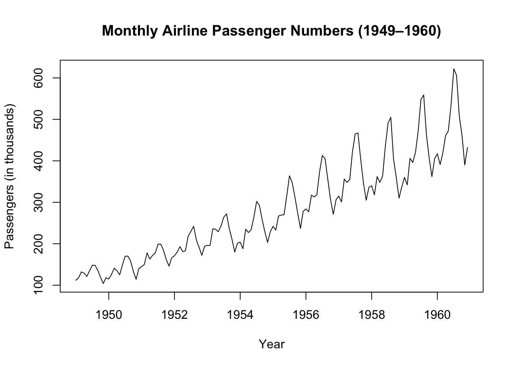
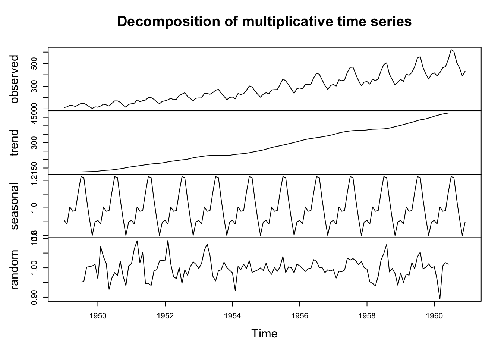
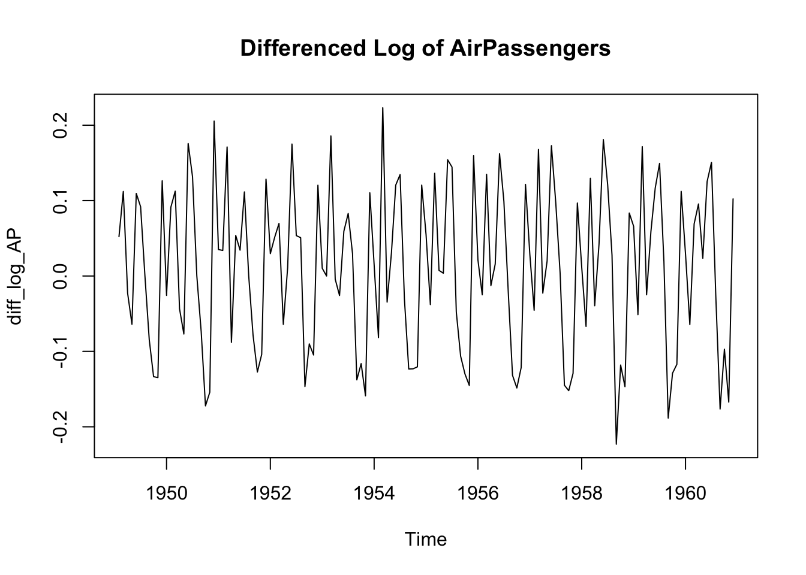
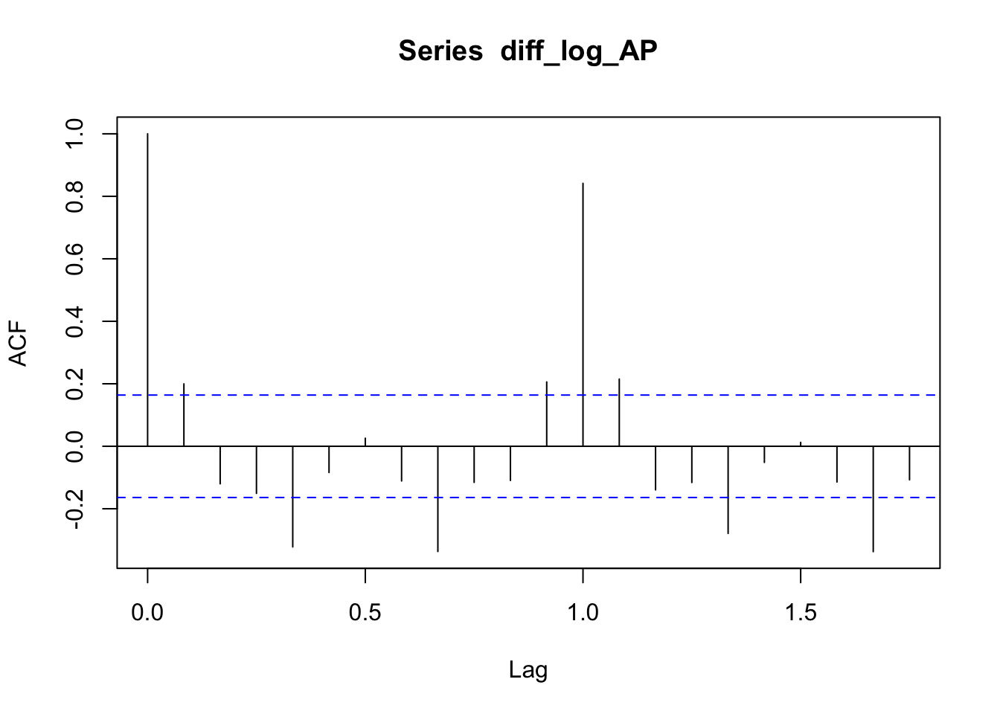
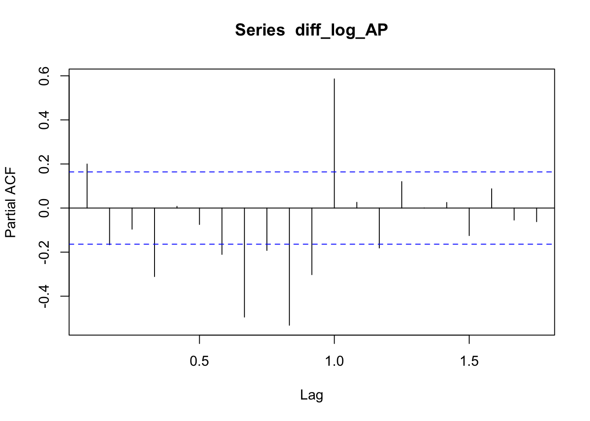
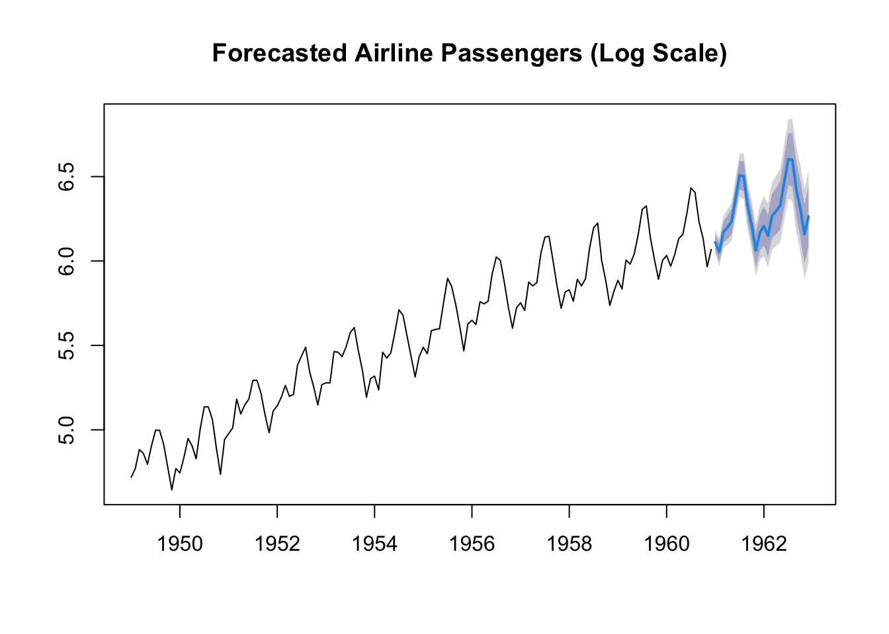
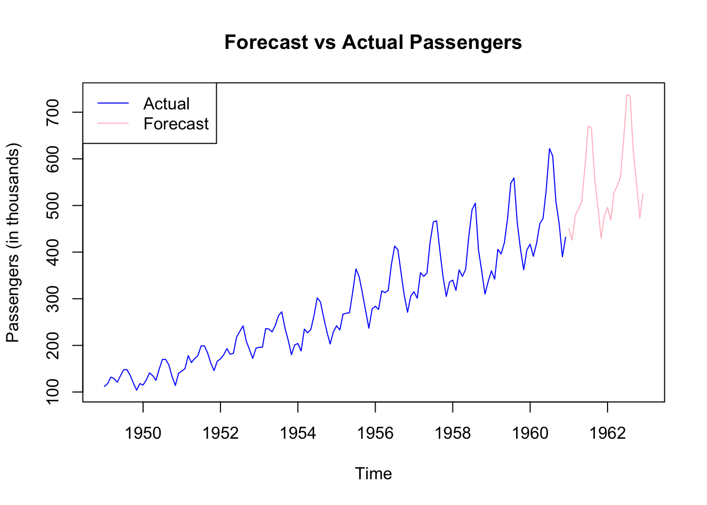

This project analyze historical monthly airline passenger data (1949–1960) and forecast future passenger demand for the next two years using time series methods. The ARIMA model successfully captured both the upward trend and seasonal cycles in the data. MAPE = 0.48%, indicating excellent predictive accuracy.
data("AirPassengers")
str(AirPassengers)## Time-Series [1:144] from 1949 to 1961: 112 118 132 129 121 135 148 148 136 119 ...summary(AirPassengers)## Min. 1st Qu. Median Mean 3rd Qu. Max.
## 104.0 180.0 265.5 280.3 360.5 622.0# just the raw time series
plot(AirPassengers,
main = "Monthly Airline Passenger Numbers (1949–1960)",
ylab = "Passengers (in thousands)",
xlab = "Year")
# separates the trend, seasonal pattern, and random noise
decomposed <- decompose(AirPassengers, type = "multiplicative")
# Plot the decomposition
plot(decomposed)
# peaks in summer, and an upward trend over time.# stabilize variance
# assume constant variance.
log_AP <- log(AirPassengers)
# achieve stationarity
diff_log_AP <- diff(log_AP)
# Plot differenced data
plot(diff_log_AP, main = "Differenced Log of AirPassengers") # achieved stationary series 
# Autocorrelation Function
acf(diff_log_AP)
# Partial Autocorrelation Function
pacf(diff_log_AP)
# install.packages("forecast")
library(forecast)## Registered S3 method overwritten by 'quantmod':
## method from
## as.zoo.data.frame zoo# Fit ARIMA model automatically
fit <- auto.arima(log_AP) # I can actually omitted the acf() & pacf()... cause auto.arima() find the best values for p, d, q value for me.
summary(fit)## Series: log_AP
## ARIMA(0,1,1)(0,1,1)[12]
##
## Coefficients:
## ma1 sma1
## -0.4018 -0.5569
## s.e. 0.0896 0.0731
##
## sigma^2 = 0.001371: log likelihood = 244.7
## AIC=-483.4 AICc=-483.21 BIC=-474.77
##
## Training set error measures:
## ME RMSE MAE MPE MAPE MASE
## Training set 0.0005730622 0.03504883 0.02626034 0.01098898 0.4752815 0.2169522
## ACF1
## Training set 0.01443892# next 2 years.
forecasted <- forecast(fit, h = 24)
plot(forecasted, main = "Forecasted Airline Passengers (Log Scale)")
# The forecast shows continued seasonal cycles with increasing values, matching historical patterns.
# The prediction intervals widen over time; increased uncertainty the further you forecast.# Convert log-forecast back to actual units
forecast_exp <- exp(forecasted$mean)
ts.plot(AirPassengers, forecast_exp,
col = c("blue", "pink"),
lty = 1,
main = "Forecast vs Actual Passengers",
ylab = "Passengers (in thousands)")
legend("topleft", legend = c("Actual", "Forecast"), col = c("blue", "pink"), lty = 1)
# The forecast follow the upward trend in air travel demand as in the historical data.
# The pink forecast line shows the seasonal spikes, peaking in the middle of each year (around summer).
# By the end of 1962, forecasted passenger numbers exceed 700,000 in peak months.